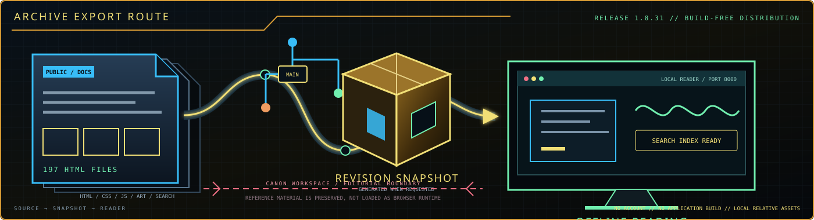

The live encyclopedia is the docs/ directory: 197 tracked HTML files plus local CSS, JavaScript, maps, and subject-specific artwork. It requires no account or application build.
Release 1.8.31 is distributed through GitHub’s current repository snapshot rather than a separately regenerated binary. This keeps the public docs/ tree, source references, changelog, and verification material together under one traceable revision.
How the Archive Travels

GitHub creates the downloadable ZIP from the selected branch at request time. That snapshot is preferred over an old packaged wiki because its contents can be tied directly to repository history.
After extraction, serve the docs/ directory with a small local HTTP server. Search data and relative assets then behave as they do on the public site without contacting an external runtime.
Canon boundary: material under REFERENCE_SOMNARAK_WIKI/ is the preserved editorial source, not browser runtime data. Read it when verifying canon, but do not mistake every raw source record for a finished public article.
CURRENT SNAPSHOT
MAIN BRANCH (.ZIP)
PROJECT.SOMNARAK-WIKI
Download the current repository revision containing the complete static encyclopedia, its local search and artwork, the verified changelog, and the preserved reference workspace. Extract it, enter the project folder, and serve docs/ for offline reading.
CANON WORKSPACE
BROWSE ON GITHUB
REFERENCE_SOMNARAK_WIKI
Browse the canonical source workspace separately from the reader-facing encyclopedia. It contains Entity and M.A.W. records, character material, Ordeals, world references, placement research, and the binding editorial and visual standards.